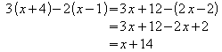

Cum aliniez formulele în dreptul semnului egal?
În momentul de faţă Math nu are o metodă de aliniere. În schimb puteţi folosi o matrice.
De exemplu pentru a scrie ecuaţia

trebuie să scrieţi ce urmează:
matrix{
alignr x+y # {}={} # alignl 2 ##
alignr x # {}={} # alignl 2-y
}Parantezele goale din jurul = sunt necesare deoarece = este un operator binar şi deci are nevoie de expresii de ambele parţi.
Puteţi reduce spaţiul din jurul = dacă schimbaţi spaţierea dintre coloane a matricei:
Alegeţi Format-Spacing.
Apăsaţi 'Category' şi alegeţi Matrixes din meniul care apare.
Aici scrieţi 0% la 'Column spacing'.
Acesta este un alt exemplu care foloseşte o altă soluţie:
Pentru a scrie ecuaţia

Şmecheria este să folosim 'phantom' dupa cum urmează:
""3(x+4)-2(x-1)=3 x+12-(2 x-2) newline
""phantom {3(x+4)-2(x-1)}=3 x+12-2 x+2 newline
""phantom {3(x+4)-2(x-1)}=x+14Efectul gilimelelor goale este ca rândul să fie aliniat la stânga - un rând care începe cu text (chiar şi text gol) va fi întodeauna aliniat la stânga.
Puteţi înlocui "" cu alignl.
Back to the Math FAQ Index Page | Back to the User FAQ Main Index Page